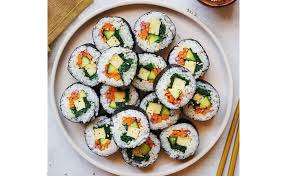

Kimbab (김밥) is a popular Korean dish made from steamed rice seasoned with sesame oil and salt, rolled in sheets of dried seaweed (gim), and filled with various ingredients such as vegetables, pickled radish, egg, and sometimes meat or seafood. The roll is then sliced into bite-sized pieces, making it convenient, flavorful, and perfect as a snack or light meal. Kimbab is known for its colorful appearance, balanced taste, and portability, often enjoyed during picnics, trips, or school lunches in Korea.